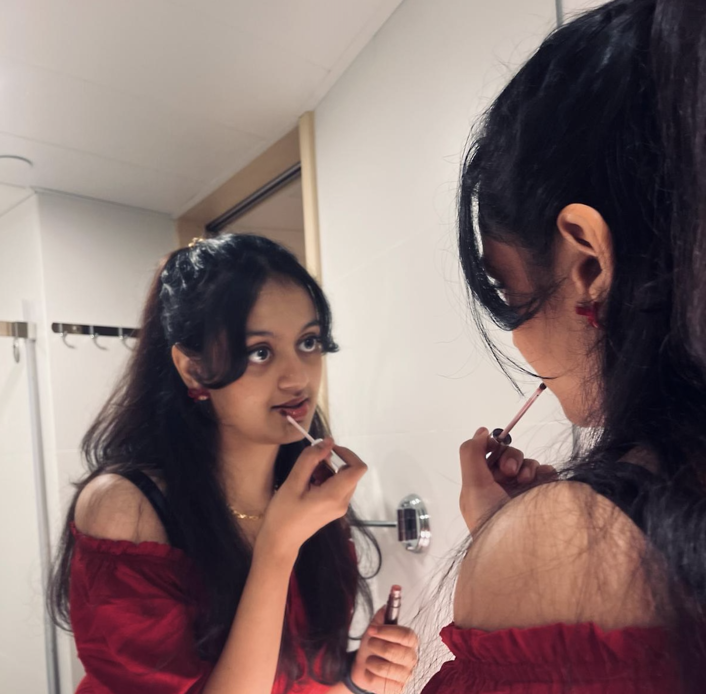

hi i'm ananya!
(this page is a work in progress!)
stuff I'm doing:
- helping build + scale a recruiting engine for vc-backed startups that are looking to hire their first engineers, designers and growth marketers
- have supported startups from pre-seed to series-b funded by yc, greylock, a16z, kleiner perkins, gradient ventues, etc.
- vancouver node of the socratica lattice
- weekly co-working + demo events, encouraging people across fields and disciplines (students, artists,founders etc.) to connect and create together
- reflections on life; thoughts on love and interpersonal dynamics, mindsets, healing, and improvement
- stories have the power to change the world
- some personal thoughts as well
pursuing an integrated sciences degree @ ubc
- specialization: neuroscience and pharmacology
- exploring how the mind and body interact in so many complex and intricate and exquisite ways
cool stuff i've done:
misc community building (2023-2024)
- i'm still doing this
- on top of my work at atelier, i've helped organize various showcase/demo nights in vancouver
- link
- link
fractional chief of staff to kyla scanlon
- helped kyla for a few months with operations, managed projects and communications with various partners, supported with strategic planning
- assisted w/ the editing and production of her debut book
here's a picture of me

you've clicked 0 times